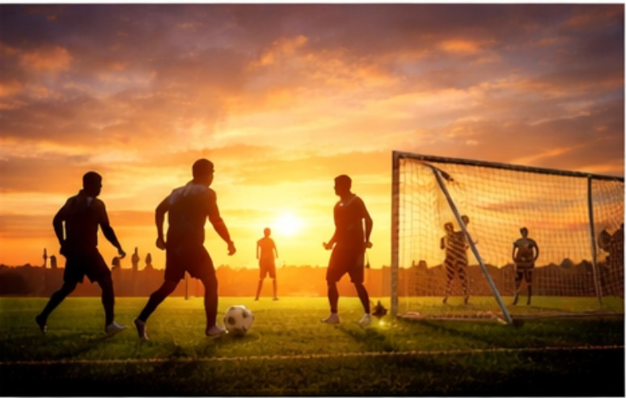
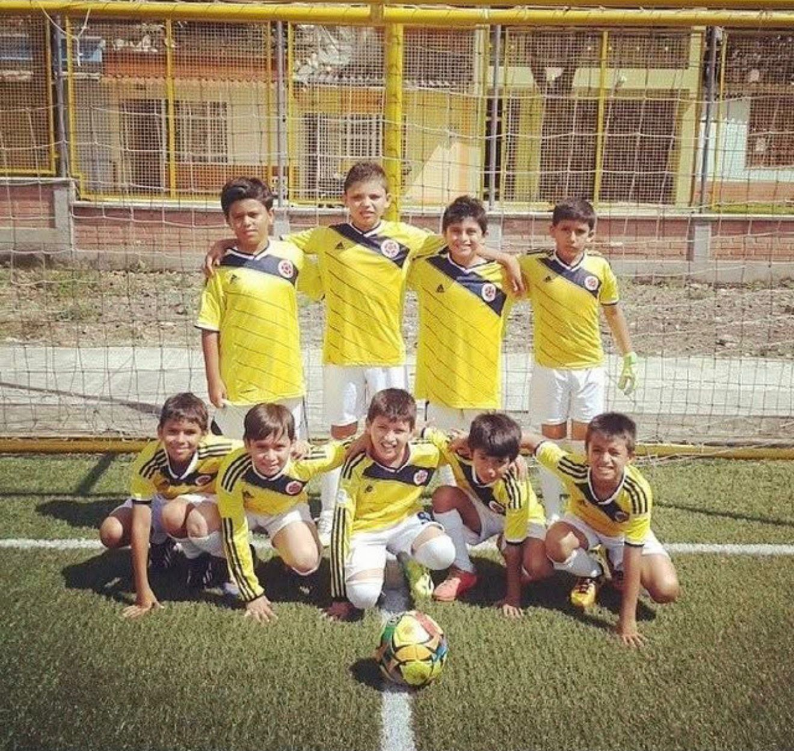
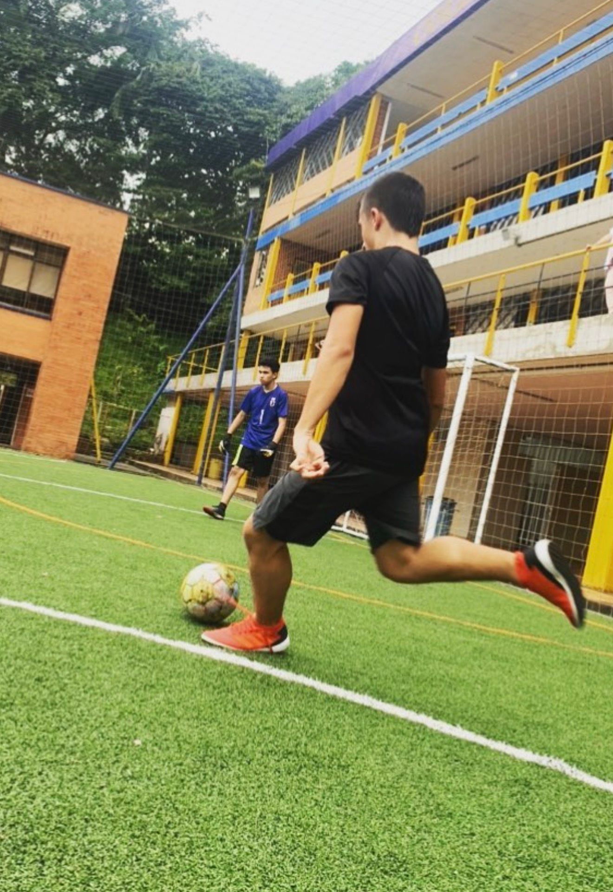
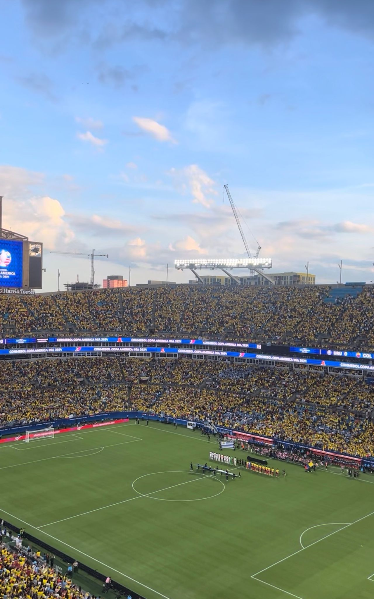
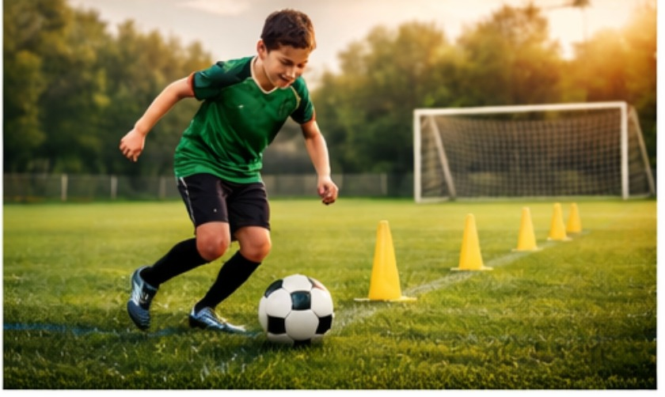

What
Soccer is my favorite hobby because it is exciting, competitive, and fun to play or watch.
It mixes skill, teamwork, speed, and strategy in a way that keeps every game interesting.
I enjoy soccer because there is always something to improve, from passing to shooting to movement.

This image matches the main idea of the hobby page.
Who
Soccer is for people of all ages and skill levels, from beginners to professionals.
I enjoy it because it gives me a way to compete, improve, and have fun at the same time.
It also helps bring people together through teams, clubs, and pickup games.

This image fits the section by showing players together.
When
Soccer can be played all year, but spring and fall are usually the best outdoor seasons.
Evenings and weekends are also great times because more people are free to play.
Training regularly is one of the best ways to improve.
| Time | Why |
|---|---|
| Spring | Nice weather and good field conditions |
| Fall | Cooler temperatures for longer games |
| Weekends | Best for games and practice |

This image represents a good time to train and play.
Where
Soccer can be played on grass fields, turf fields, indoor courts, or even open parks.
That flexibility makes it one of the easiest hobbies to enjoy almost anywhere.
Different places can help develop different parts of the game.

This image matches the section by showing a soccer field.
How
Getting started with soccer is simple. All you need is a ball, basic gear, and space to practice.
Beginners can focus on dribbling, passing, first touch, and shooting.
Improvement comes from repetition, consistency, and playing real matches.

This image shows the kind of training used to improve.
Why
I like soccer because it is competitive, exciting, and rewarding.
It helps with fitness, discipline, teamwork, and confidence.
It is also a hobby that creates great memories with other people.
This image reflects the excitement that makes soccer enjoyable.
AI Prompts
I only used AI for images.
This section is included because it is required in the assignment.
The rest of the page content is organized as a hobby site about soccer.
This image was included to match the topic and style of the page.